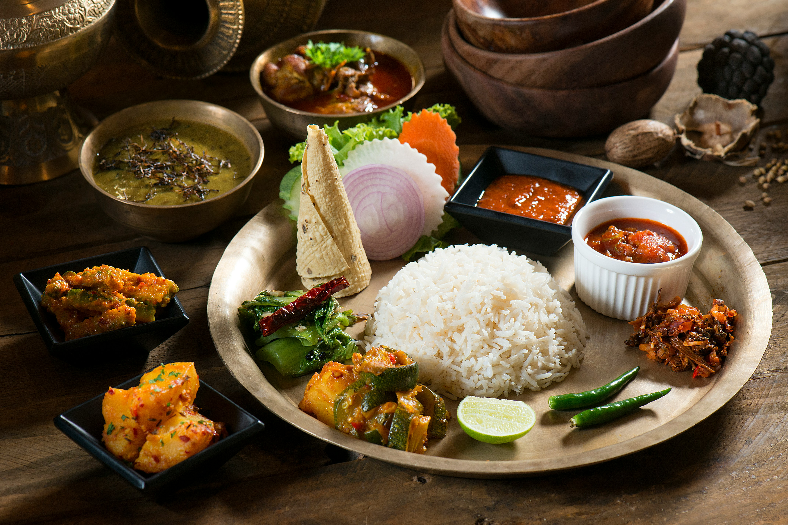

Dal Bhat

Description:
Dal Bhat is the staple food of Nepal, consisting of lentil soup (dal) and rice
(bhat), often served with vegetables, pickles, and sometimes meat or fish.
Ingredients:
For the dal:
- 1 cup lentils (yellow or red)
- 1 onion, chopped
- 2 cloves garlic, minced
- 1-inch piece of ginger, minced
- 1 tomato, chopped
- 1 teaspoon cumin seeds
- 1 teaspoon turmeric powder
- Salt to taste
- Chopped cilantro for garnish
- Ghee or oil for cooking
For the rice:
- 2 cups rice
- Water, as needed
Steps:
-
Rinse the lentils and cook them in a pot with water, turmeric, salt, onion,
garlic, ginger, and tomato until soft and creamy.
- In another pot, cook the rice according to package instructions.
-
In a small pan, heat ghee or oil and add cumin seeds. Once they splutter,
add this tempering to the cooked lentils.
- Serve hot dal and rice together, garnished with chopped cilantro.